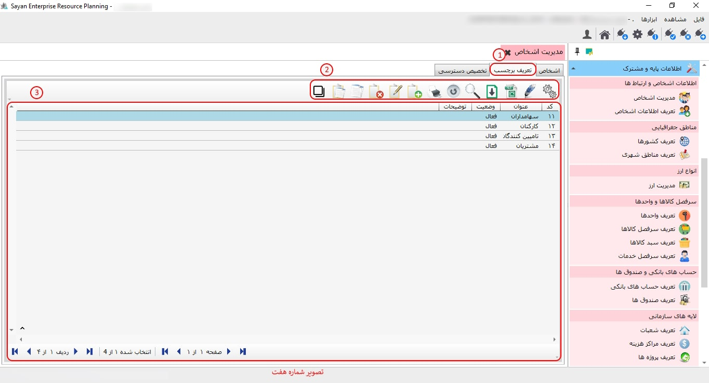

در این بخش، میتوانید اطلاعات مربوط به اشخاصی که با آنها در ارتباط هستید را تعریف نمایید.
نکته: جهت انتخاب این گزینه، لطفاً به بخش اطلاعات پایه مشترک مراجعه کرده و زیر سیستم مدیریت اشخاص را انتخاب نمایید.

زمانی که گزینه مدیریت اشخاص را انتخاب میکنید، تصویر شماره دو نمایان میگردد.

کادر شماره دو (اشخاص): در سر برگ اشخاص می توانید اطلاعات مربوط به اشخاص را مشاهده و عملیات مرتبط با آن را انجام دهید.
کادر شماره دو(جستجو برچسب ها): در این قسمت شما می توانید برچسب هایی که از قبل تعریف کرده اید را انتخاب نمایید.
نکته: اگر همه برچسب ها را انتخاب نمایید در این صورت تمامی اشخاصی که در برچسب های دیگه تعریف کرده اید برایتان نمایش داده می شود.
-کادر شماره سه: برای جستجوی سریع اشخاص، شما میتوانید با تایپ بخشی از کد شخص یا نام خانوادگی، بهصورت لحظهای فهرستی از افراد مرتبط با جستجوی خود را مشاهده کنید. این ویژگی به شما این امکان را میدهد تا بهراحتی و با سرعت، اطلاعات موردنظر را پیدا کنید.
-کادر شماره چهار: در این قسمت، پیشتر (شروع کار با راهنما و ابزارهای عمومی) توضیحات لازم داده شده است.
برای شروع کار با راهنما و ابزارهای عمومی میتوانید مطالب مربوطه را از طریق لینک زیر مشاهده کنید.
-کادر شماره پنج: در این بخش، فهرستی از تمامی اشخاص حقیقی و حقوقی که بهطور مشخص تعریف شدهاند، قابل مشاهده است.
-کادر شماره شش: در این قسمت شما می توانید اطلاعات مربوط به اشخاصی که در کادر شماره 4 انتخاب کرده اید را مشاهده کنید.
-کادر شماره هفت (تعیین برچسب): با انتخاب گزینه تعیین برچسب میتوانید برای اشخاص انتخابشده در کادر شماره ۴، برچسبهای موردنظر را اختصاص دهید.
-کادر شماره هشت: در این بخش، با توجه به نیازتان میتوانید گروهبندی اشخاص را به سیستم اضافه کنید و همچنین می توانید تمامی اشخاص را حتی اگر شخصی برچسب نداشته باشد مشاهده کنید.
پیش از ایجاد گروهبندی اشخاص، لطفاً با واحد پشتیبانی تماس حاصل فرمایید.
برای ادامه مطلب به تصویر شماره سه مراجعه نمایید.

-کادر شماره یک(تعیین برچسب): جهت تعریف اشخاص حقیقی یا حقوقی، لازم است که ابتدا برچسب (لیبل) مدنظرتان را انتخاب نمایید
برای ادامه مطلب به تصویر شماره چهار مراجعه نمایید.

کادر شماره یک: در این قسمت، پیشتر (شروع کار با راهنما و ابزارهای عمومی) توضیحات لازم داده شده است.
برای شروع کار با راهنما و ابزارهای عمومی میتوانید مطالب مربوطه را از طریق لینک زیر مشاهده کنید.
-کادر شماره دو: این آیکون به شما این امکان را میدهد که اشخاص موردنظر خود را تعریف کنید. قبل از انجام این کار، لطفاً برچسب مناسب را انتخاب کنید تا بتوانید از طریق آیکون مربوطه آنها را تعریف نمایید.
برای ادامه مطلب به تصویر شماره پنج مراجعه نمایید.

-کادر شماره یک: در این قسمت شما میتوانید جهت تعریف اشخاص حقیقی، گزینه حقیقی را انتخاب و اطلاعات مربوطه وارد نمایید.
-کادر شماره دو(اطلاعات شخص): پس از انتخاب نوع شخص (حقیقی یا حقوقی)، میتوانید اطلاعات مربوط به اشخاص را وارد نمایید.
برای تعریف شخص حقوقی به تصویر شماره شش مراجعه نمایید.

-کادر شماره دو(اطلاعات شخص): پس از انتخاب گزینه حقوقی، میتوانید اطلاعات مربوط به سازمان خود را وارد نمایید.
برای ادامه مطلب به تصویر شماره هفت مراجعه نمایید.
-کادر شماره یک(تعریف برچسب): در این بخش میتوانید برچسبهای مورد نیاز خود را تعریف کنید.
-کادر شماره دو: در این قسمت، پیشتر (شروع کار با راهنما و ابزارهای عمومی) توضیحات لازم داده شده است.
برای شروع کار با راهنما و ابزارهای عمومی میتوانید مطالب مربوطه را از طریق لینک زیر مشاهده کنید.
-کادر شماره دو: این بخش به شما این امکان را میدهد که تمامی برچسبهایی را که تعریف کردهاید، مشاهده کنید. همچنین، در صورت نیاز، میتوانید تغییرات و ویرایشهای لازم را اعمال نمایید.

در این قسمت می بایست برای ایجاد برچسب مدنظرتان از این آیکون استفاده نمایید.
برای ادامه مطلب به تصویر شماره هشت مراجعه نمایید.
-کد (کادر شماره یک): در این بخش، کد بهصورت پیشفرض برای شما ایجاد میشود و به همین دلیل نیازی به تغییر در کد نیست.
-عنوان(کادر شماره دو): در این بخش، می بایست عنوان برچسب مورد نظر خود را وارد نمایید.
-وضعیت (کادر شماره سه): در این بخش، وضعیت فعال یا غیرفعال بودن برچسب مدنظر خود را وارد نمایید.
-توضیحات(کادر شماره چهار): در این قسمت میتوانید در صورت نیاز، توضیحات مربوط به برچسب مورد نظر خود را وارد کنید.
برای ادامه مطلب به تصویر شماره نه مراجعه نمایید.
-تخصیص دسترسی (کادر شماره یک): این قسمت به شما این امکان را میدهد که برچسبهای مورد نظر خود را به کاربر مدنظر اختصاص دهید.
-کادر شماره دو: در این قسمت میتوانید تمامی کاربرهای خود را مشاهده کنید.
-موارد انتخاب شده (کادر شماره سه): در این بخش میتوانید موارد انتخاب شده را به انتخاب نشده انتقال دهید.
-موارد انتخاب نشده (کادر شماره چهار): این فیلد این امکان را به شما میدهد که موارد انتخاب نشده را به موارد انتخاب شده منتقل کنید.

-کادر شماره پنج: برای اضافه کردن موارد انتخابنشده، از این آیکون میتوانید استفاده کنید.

-کادر شماره شش: در این آیکون میتوانید برای حذف موارد انتخابشده استفاده نمایید.